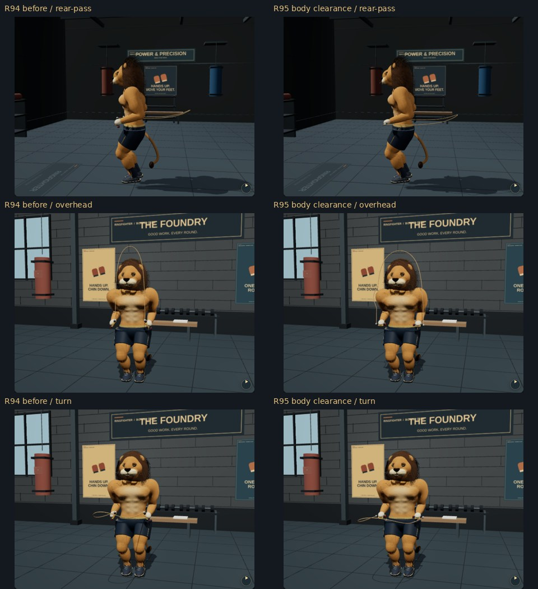
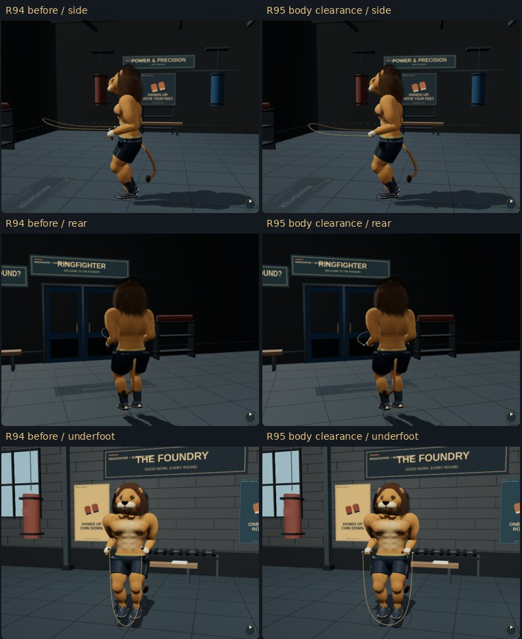

Actual matching app renders. The outlets point outward, and the cable is routed around posed body volumes while hands remain beside the hips.


Methods, measured triangle clearance and limits · Validation · Open RingFighter
Camera projection can show a branch in front of the torso; the geometric check measures its real 3D separation. Physical-phone sustained performance remains unverified.